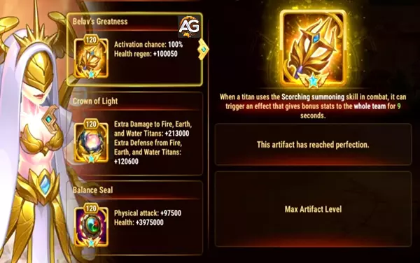
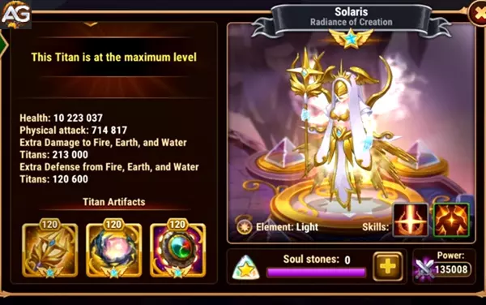
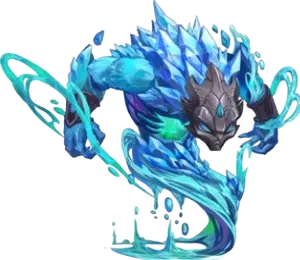

Dominando Solaris: Um Guia Completo para Hero Wars Alliance
- Por: Alexandre Domingos. .
Bem-vindo ao guia definitivo sobre como dominar o poder de Solaris, a Super Titã da Luz, em Hero Wars Alliance. Com a introdução de Solaris, a dinâmica do campo de batalha mudou, oferecendo novas estratégias e sinergias empolgantes. Neste guia, vamos explorar as habilidades de Solaris, suas sinergias com outros Titãs e táticas avançadas para derrotar seus oponentes.
História de Solaris
Histórias de Hero Wars Alliance:Solaris – uma brilhante Super Titã cuja luz pode aquecer ou reduzir tudo a cinzas. Em batalha, ela pode proteger aliados, bem como atacar e enfraquecer os oponentes.

Principais Atributos da Super Titã Solaris
| Posição: | Linha do Meio |
| Função: | Super Titã |
| Elemento Principal: | Luz |
| Como Obter as Pedras da Alma: | Eventos, Esfera de Invocação |
| Sinergia: | Amon, Iyari, Rigel |
Lista de Níveis de Solaris 2025
| Tier List da Arena: | S+ |
| Tier List da Masmorra: | S+ |
Entendendo a Super Titã Solaris em Hero Wars
Solaris surge como o farol de luz, empunhando um poder incomparável que pode mudar o rumo de qualquer batalha. Antes de mergulharmos nas estratégias, vamos detalhar suas habilidades:
Habilidades
1. Invocação Abrasadora:
Solaris invoca o poder da luz, criando um pilar luminoso no meio da equipe inimiga. Esse pilar causa dano contínuo e reduz a velocidade dos inimigos próximos. Essa habilidade não só inflige dano, mas também controla o campo de batalha ao dificultar o movimento dos inimigos.
2. Invocar Luz:
Solaris concede uma partícula de luz a todos os Titãs de Luz aliados e ao aliado com menor porcentagem de vida. Essa partícula protege contra efeitos de atordoamento, oferecendo uma proteção essencial durante confrontos intensos.
Agora que entendemos o arsenal de Solaris, vamos explorar suas sinergias e como aproveitá-las com eficácia.
Sinergias com Outros Titãs
O verdadeiro potencial de Solaris brilha quando ela é combinada com Titãs específicos, amplificando seu impacto no campo de batalha:
1. Iyari:
Solaris tem uma sinergia excepcional com Iyari, o farol da luz. A habilidade de Iyari de invocar um farol de cura complementa perfeitamente o kit de Solaris. A cura constante e o impulso de energia fornecido por Iyari permitem que Solaris ative seu ultimate, Superpotência, com mais frequência, devastando os inimigos com dano em área massivo.
2. Amon e Rigel:
Solaris também forma laços sinérgicos com Amon e Rigel, aumentando ainda mais o poder dos Titãs de Luz. A presença dominante de Amon e o suporte estratégico de Rigel complementam as capacidades ofensivas de Solaris, criando um trio formidável no campo de batalha.
Agora que estabelecemos as sinergias de Solaris, vamos mergulhar em estratégias avançadas para aproveitamento ideal.
Táticas Avançadas
1. Posicionamento Estratégico do Pilar:
Ao usar a Invocação Abrasadora, posicione estrategicamente o pilar de luz para atrapalhar a formação inimiga. Mire em pontos de estrangulamento ou em áreas com inimigos agrupados para maximizar o dano e o controle de grupo.
2. Ativação Oportuna do Ultimate:
Coordene o ultimate de Solaris, Superpotência, com os momentos cruciais da batalha. Espere por oportunidades quando as defesas inimigas estiverem enfraquecidas ou quando os Titãs inimigos estiverem agrupados. O dano em área devastador pode virar o jogo a seu favor.
3. Proteção Prioritária com Invocar Luz:
Use o Invocar Luz com sabedoria para proteger alvos prioritários dos efeitos de atordoamento. Identifique aliados-chave, como causadores de dano elevado ou suportes cruciais, e garanta que estejam protegidos para manter o ímpeto ofensivo.
4. Adaptação à Composição Inimiga:
Avalie a formação inimiga e adapte a estratégia de Solaris conforme necessário. Contra equipes focadas em controle de grupo, priorize a proteção com Invocar Luz. Já contra composições de alto dano, foque em posicionamento agressivo e ativações precisas do ultimate para desmantelar as forças inimigas rapidamente.
Titã Solaris na Masmorra: Maximizando Força e Sinergia
Nas profundezas traiçoeiras da masmorra, dominar a arte da composição de equipe é crucial para o sucesso. Solaris se destaca como uma força formidável nesse ambiente, especialmente quando combinada estrategicamente com Titãs como Sigurd, Hyperion e Iyari. Juntos, formam um núcleo resiliente, protegendo a equipe e fortalecendo a eficácia de aliados como Moloch e Angus, que frequentemente enfrentam os ataques mais intensos dos inimigos.
Na Masmorra, Solaris substitui Avalon nas salas mistas 5v5, especialmente na clássica formação Hyperion-Avalon-Iyari-Andus-Sigurd. Altere para Hyperion-Solaris-Iyari-Angus-Sigurd para uma composição mais equilibrada e poderosa.
Construindo uma Base Sólida
A força de Solaris na masmorra está em sua capacidade de proteger a equipe enquanto causa danos devastadores aos adversários. Ao combiná-la com Titãs como Sigurd, Hyperion e Iyari, você cria uma linha de frente poderosa que não apenas resiste aos ataques inimigos, mas também oferece suporte essencial aos aliados.
1. Sigurd:
A presença firme de Sigurd complementa as capacidades defensivas de Solaris, formando uma linha de frente resiliente capaz de suportar até os ataques mais implacáveis. Sua habilidade de absorver dano e distrair os inimigos dos aliados vulneráveis o torna um parceiro ideal para Solaris na masmorra.
2. Hyperion:
O poder ofensivo de Hyperion combina perfeitamente com a capacidade de dano de Solaris. Juntos, formam uma dupla dinâmica capaz de dizimar as fileiras inimigas com ataques incessantes. A cura estratégica e os ataques de Hyperion, somados às habilidades devastadoras de Solaris, criam uma força potente a ser temida.
3. Iyari:
O farol de cura de Iyari fornece sustentação essencial para a equipe, garantindo que os aliados se mantenham em condições de combate durante a exploração da masmorra. Ao emparelhar Iyari com Solaris, você não apenas aumenta a sobrevivência da equipe, mas também permite que Solaris libere todo o seu potencial com mais frequência, graças à cura contínua e impulsos de energia fornecidos por Iyari.
Otimizando o Papel de Solaris
Embora Solaris se destaque em proteger e apoiar seus aliados, ela também é uma poderosa causadora de dano. Em cenários de masmorra onde é necessária proteção extra, considere utilizar Avalon. No entanto, se a prioridade for maximizar o dano, Solaris deve assumir o protagonismo.
Maximizando o Potencial de Dano:
Em encontros contra Super Titãs e Titãs dos elementos Terra, Água e Fogo, as capacidades ofensivas de Solaris brilham intensamente. Suas habilidades são particularmente eficazes contra esses adversários elementais, permitindo que ela cause estragos nas fileiras inimigas e garanta a vitória da sua equipe.
Dominando a Masmorra com Solaris
Na complexa dança da exploração da masmorra, Solaris surge como uma companheira fiel, oferecendo proteção e devastação na mesma medida. Ao combiná-la estrategicamente com Titãs como Sigurd, Hyperion e Iyari, você cria uma equipe formidável capaz de superar até os desafios mais difíceis.
Seja priorizando proteção ou dano, Solaris prova ser um recurso indispensável nas profundezas da masmorra, conduzindo sua equipe à vitória repetidamente.
Super Titã Solaris Hero Wars - Pontos Positivos e Negativos
Pontos Positivos da Super Titã Solaris
- Dano em Área
- Superpotência
- Sinergia com Amon, Iyari, Rigel
- Protege o aliado com menos vida contra atordoamento
- Forte contra titãs de fogo, terra e água
- Retarda inimigos próximos
- Artefato de Arma com cura
Pontos Negativos da Super Titã Solaris
- Não foram encontrados
Prioridade de Evolução de Estatísticas da Super Titã Solaris
Otimização dos Artefatos da Solaris: Uma Abordagem Estratégica
Na otimização dos artefatos da Solaris, a atenção meticulosa é voltada para maximizar sua eficácia no campo de batalha. A escolha e o aprimoramento dos artefatos desempenham um papel fundamental no aumento das capacidades da Solaris, garantindo que ela se mantenha como uma força indomável contra os adversários. Aqui está um detalhamento completo da priorização dos artefatos da Solaris:
1. Selo do Equilíbrio:
O foco principal está em adquirir e aprimorar o artefato Selo do Equilíbrio. Este artefato tem uma função dupla, reforçando a vitalidade de Solaris e aumentando seu potencial de ataque físico. Ao priorizar o aprimoramento do Selo do Equilíbrio, Solaris não apenas ganha mais sobrevivência através de estatísticas de vida elevadas, mas também amplifica suas capacidades ofensivas. A correlação entre o poder de ataque físico e a força da habilidade suprema em área de Solaris, a Over-Power, é crucial. Quanto maior o ataque físico de Solaris, mais devastador será o dano de Over-Power, mudando o rumo da batalha a seu favor.
2. Aprimoramento da Arma:
Após priorizar o Selo do Equilíbrio, o aprimoramento do artefato da arma se torna essencial. A arma serve como um canal para o poder de Solaris, convertendo sua energia em resultados tangíveis no campo de batalha. Ao focar no aprimoramento da arma, você melhora as capacidades de regeneração de vida para toda a equipe da Solaris. Em meio à batalha, a resistência contínua é inestimável. A regeneração de vida aprimorada proporcionada pela arma garante que Solaris e seus aliados se mantenham resilientes e formidáveis em combates prolongados, superando seus adversários.
3. Coroa da Luz:
Como etapa final na otimização dos artefatos da Solaris, a atenção é direcionada para a ascensão do artefato Coroa da Luz. Ascender esse artefato fortalece as defesas de Solaris ao mesmo tempo que aumenta seu dano contra titãs antigos da Terra, Fogo e Água. No cenário de batalha em constante evolução, a resiliência é a chave. Ao aumentar as defesas de Solaris com a Coroa da Luz, ela se torna mais apta a resistir aos ataques inimigos, garantindo sua permanência no campo de batalha. Além disso, o aumento de dano contra titãs elementais específicos destaca a adaptabilidade e versatilidade de Solaris, permitindo que ela se destaque em diversos cenários de combate.
Em resumo, a escolha e o aprimoramento criterioso dos artefatos da Solaris são fundamentais para maximizar sua eficácia no campo de batalha. Ao priorizar o Selo do Equilíbrio para aumento de vida e ataque físico, ascender a Coroa da Luz para defesa reforçada e dano contra titãs elementais específicos, e aprimorar a arma para melhor regeneração de vida, você garante que Solaris se torne uma força indomável, conduzindo sua equipe à vitória repetidamente.
| Prioridade | Artefatos | Melhoria de Estatísticas |
|---|---|---|
| 1º | Selo do Equilíbrio | Ataque Físico +97500 Vida +3975000 |
| 2º | (Arma) Grandeza de Belav |
Regeneração de Vida +100050 |
| 3º | Coroa da Luz | Dano Extra +213000 e Defesa +120600 contra Titãs de Fogo, Terra e Água |

Prioridade de Visual da Super Titã Solaris
No momento, Solaris possui apenas a aparência padrão.
| Prioridade | Skin | Melhoria de Estatísticas |
|---|---|---|
| 1º | Padrão | Ataque Físico +196800 |
| 2nd | Skin Primordial | Vida +2627975 |

Super Titã Solaris em Batalhas - Hero Wars
Forte Contra
- Nova, Moloch, Eden, Amon, Araji, Hyperion
Como Counterar a Solaris
| Melhores Counters para a Super Titã Solaris |
O que acontece |
|---|---|
 Mort |
Mort redireciona parte da vida e do ataque físico do titã com o maior ataque físico da equipe inimiga. Dessa forma, ele consegue reduzir o dano da habilidade Over-Power da Solaris. Ainda assim, Amon possui estatísticas de ataque físico superiores às da Solaris, então ela pode ser o segundo ou terceiro alvo de Mort. |
 Mairi |
A habilidade suprema da Mairi reduz o ataque dos inimigos em 40% por 8 segundos. Isso faz com que a Solaris cause menos dano em área aos inimigos. |
Melhores Equipes para a Super Titã Solaris na Hero Wars Alliance
Top 7 Equipes de Defesa com a Super Titã Solaris
- Rigel, Iyari, Eden, Solaris, Tenebris
- Rigel, Iyari, Solaris, Mort, Tenebris
- Rigel, Iyari, Solaris, Amon, Tenebris
- Rigel, Iyari, Eden, Solaris, Amon
- Brustar, Iyari, Solaris, Mort, Tenebris
- Brustar, Rigel, Iyari, Solaris, Tenebris
- Rigel, Eden, Solaris, Mort, Tenebris
Top 7 Equipes de Ataque com a Super Titã Solaris
- Tenebris, Mort, Solaris, Iyari, Rigel
- Tenebris, Amon, Solaris, Iyari, Rigel
- Tenebris, Solaris, Eden, Iyari, Rigel
- Amon, Solaris, Eden, Iyari, Rigel
- Tenebris, Mort, Solaris, Iyari, Brustar
- Tenebris, Solaris, Iyari, Rigel, Brustar
- Tenebris, Mort, Solaris, Eden, Rigel
Conclusão do Guia da Super Titã Solaris
Dominar a Solaris eleva suas capacidades estratégicas na Hero Wars Alliance, oferecendo controle incomparável e poder de fogo devastador no campo de batalha. Ao entender suas habilidades, sinergias e táticas avançadas, você pode liderar sua aliança rumo à vitória e firmar seu legado como uma força formidável no reino dos Titãs. Abrace a luz, canalize seu poder e permita que Solaris ilumine o caminho para o triunfo.
Sugestões de Vídeos da Solaris:
Você pode ter interesse:
 Amon
Amon Avalon
Avalon Éden
Éden Iyari
Iyari Keros
Keros Nova
NovaDeixe Sua Opinião!
Você gostou do nosso Guia da Super Titãs Solaris para Hero Wars Mobile? Há algo que não entendeu ou gostaria de sugerir mudanças? Convidamos você a se juntar à nossa sessão de comentários na página do Alexandre Games Blog. Não hesite em expressar sua opinião, clarificar suas dúvidas e compartilhar sua sugestões.
Clique no botão abaixo para começar: